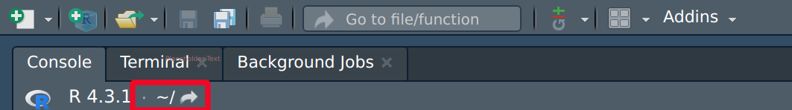

DAiR Workshop 2024


Author: Dr. Hamed Abdollahi
PI: Dr. Homayoun Valafar
Welcome to our workshop on using R, a powerful and versatile environment for statistical computing and research. Our goal is to provide you with a comprehensive introduction to R, drawing from our extensive experience in both teaching and learning the language over the years.
While we have endeavored to simplify the content as much as possible, this workshop is not an exhaustive guide to R—covering everything would be an impossible task. Additionally, this is not a beginner’s course in statistics, though we will employ some basic statistical concepts to demonstrate the capabilities of R.
Overview of Our Calendar
| Time/Day | Monday, July 8 | Tuesday, July 9 | Wednesday, July 10 | Thursday, July 11 | Friday, July 12 |
|---|---|---|---|---|---|
| 10 - 11 | Introduction to R, R Studio & web APIs for R |
Data structure |
Functions in R |
Data Wrangling |
Data Visualization |
| 11 - 12 | Basic R | Control statements | Examples | Examples |
Examples |
| 14 - 15 | Office Hour | Office Hour | Office Hour | Office Hour | Office Hour |
| Time/Day | Monday, July 15 | Tuesday, July 16 | Wednesday, July 17 | Thursday, July 18 | Friday, July 19 |
|---|---|---|---|---|---|
| 10 - 11 | Nonparametric Statistics |
Unsupervised Learning Clustering Analysis |
AI/ML: Regression/classifierDecision Tree Genomics: Genomic Sequences |
AI/ML: Neural NetworksGenomics: Multiple sequence alignment |
AI/ML: Neural NetworksGenomics: Single Cell Analysis |
| 11 - 12 | Dimension Reduction PCA |
K_means KNN |
AI/ML: Random ForestGenomics: |
AI/ML: Random Forest/Neural NetworksGenomics: Phylogenetics |
AI/ML: Neural NetworksGenomics: Single Cell Analysis |
| 14 - 15 | Office Hour | Office Hour | Office Hour | Office Hour | Office Hour |
Introduction to R & RStudio
Section Goals:
 An introduction to R programming language.
An introduction to R programming language.
How to install R & RStudio on Windows, macOS, Linux.
An overview of RStudio, a powerful IDE for R.
Getting acquainted with the initial interface and features.
The ranking of R language compared to other programming tools.
Understanding APIs and their significance.
What is R
R is a comprehensive software suite designed for data manipulation, computation, and graphical visualization.
It is an open source versatile environment utilized for newly developing methods of interactive data analysis.
R can be seen as an implementation of the S language. The S language also serves as the foundation for the S-Plus systems.
The programming languages S (1985) , which received the ACM Software Systems Award in 19981, developed by John M. Chambers(Chambers 1998).
In 1992, George Ross Ihaka and Robert Gentleman, from the University of Auckland, developed R based on the programming languages S and Scheme (1975).
George Ross Ihaka and Robert Gentleman published their experience as a statistical computing language in 1996(Ihaka and Gentleman 1996).
The inaugural “stable beta2†version, denoted as v1.0, was officially launched on February 29, 20003 .
R features a vast library primarily written in C, C++, Fortran, and R.
R facilitates tasks such as linear and nonlinear modeling, statistical tests, time series analysis, classification, clustering, and more.
R has emerged as the leading statistical software in the scientific community.
It excels in analyzing data and producing insights for companies and institutions, empowering them to make informed business decisions.
Installation of R & RStudio
-
Streamlined Installation Process for R and Rstudio
Windows macOS Linux Install R in Jupyter R in Visual Studio Code
1. Install R for Windows by downloading and running the .exe file from CRAN.
Additionally, download and install the recommended version of Rtools.
2. Installing R on Microsoft Windows may encounter some known issues ( R for Windows FAQ).
Step 1:
Step 2:
Step 3:
Step 4:
Step 5:
Step 6:
Step 7:
Step 8:
Step 9:

Step 10:
Step 11:
3. If you'd like to delve deeper into the process, feel free to explore How to Build R-devel and packages on Windows
4. You have the option to uninstall R directly from the Control Panel.
5. Please ensure to install the RStudio IDE specifically designed for Windows operating systems.
Step 1:
Step 2:
Step 3:
Step 4:
Step 5:
6. Keep in mind that if you're operating with separate user and admin accounts, it's advisable to run the installers as an administrator.
7. For optimal performance, please note that RStudio Pro for Windows necessitates a 64-bit edition of Microsoft Windows 10 or a more recent version.
8. Leverage Git BASH for Command-Line Efficiency
9. Powershell provides a versatile task automation solution, comprising a command-line shell, a scripting language, and a configuration management framework. It is compatible with Windows, Linux, and macOS operating systems.
10. Scoop is a command-line installer for Windows that allows users to install software packages directly from the command prompt or PowerShell, streamlining the installation process.
1. Install R for macOS by downloading the installer from CRAN. Click to open the installer. Click Continue and proceed through the installer.
Additionally, download and install the latest clang and gfortran compilers from the tools section.
2. In order to compile R for macOS, you will need the tools here.
Step 1: (Details About the Downloaded Version)
Step 2: (Terms and License)
Step 3: (Terms and License)
Step 4:(Consent to the Terms and License)
Step 5: (Select Installation Location and Proceed with Installation)
Step 6:
Step 7:
Step 8:
3. Also, please install the RStudio IDE for macOS. Follow the instructions provided by the installer for macOS.
4. RStudio for Mac requires macOS 10.15 (Catalina) or newer. Download the disk image (.dmg) and open it. Drag the RStudio icon to Applications then eject the disk image once complete. To uninstall, move RStudio from where it was installed to the trash.
5. In every version of Mac OS X, bash serves as the default shell, so there's no requirement for additional installations. To access bash, simply navigate to the Terminal, conveniently located in /Applications/Utilities.
6. Download Git for macOS if it's not already available.
1. Install R for Linux [Debian, fedora, Ubuntu]using your package manager or by downloading the source code from CRAN and compiling it.
2. Building R from source is customary on Linux and Unix systems, whereas on Mac OS X or Windows platforms, it's not the standard practice.
3. While constructing your own binaries might potentially boost R's performance, utilizing prebuilt binaries doesn't pose significant issues even when handling large datasets.
4. Also, please install the RStudio IDE for Linux. Refer to the documentation of your Linux distribution for specific instructions.
5. Acquire and Deploy Git for Linux and Unix
1. Make sure Jupyter Notebook is installed on your computer.
2. In R or RStudio use R kernel for Jupyter Notebook
1. Install R Version 3.4.0 or Higher on Your Platform.
2. Install languageserver in R.
3. Make sure Visual Studio IDE is installed on your computer.
4. Use R Extension for Visual Studio Code which provides support for the R programming language.
5. For installation, launch VS Code Quick Open (Ctrl+P), paste [ext install REditorSupport.r], and press enter.
6. For more information visit R in Visual Studio Code
This workshop pertains to Ubuntu package of R, version 4.3.3 (released on February 29, 2024). Users running R on Windows or macOS may need to make minor adjustments accordingly.
You can check here for some of the most frequently asked questions about R.
Popularity of R
What is RStudio
RStudio serves as an integrated development environment supporting various programming languages, including R and Python.
It is compatible with Windows 10+, macOS 11+, and Linux operating systems.
Unlike the basic R interface, RStudio offers a modern and appealing interface, enhancing data analysis and graphical preparation.
Integrating version control systems like Git within RStudio is a convenient feature that enables efficient management of code changes and facilitates collaboration among team members.
RStudio offers a range of functionalities, including:
Local Access: Access RStudio locally on your machine.
Syntax Highlighting and Code Completion: Enjoy syntax highlighting, code completion, and smart indentation for smoother coding.
Direct Execution: Execute R code directly from the source editor for quick testing and debugging.
Function Navigation: Quickly navigate to function definitions for efficient coding.
Real-Time Content Viewing: Use the Visual Markdown Editor for RMarkdown or Quarto documents to view content changes in real-time.
Project Management: Easily manage multiple working directories using Projects, keeping your work organized and efficient.
Integrated Help and Documentation: Access integrated R help and documentation within RStudio for quick reference and assistance.
Python Integration: View Python data, publish, and render in Python, and seamlessly share objects with R.
Interactive Debugger: Diagnose and fix errors efficiently with the interactive debugger feature.
Package Development Tools: Utilize extensive package development tools for streamlined package development.
App and Report Publishing: Easily publish apps and reports directly from RStudio, simplifying the sharing and dissemination of your work.
RStudio is available in both open source and commercial editions. This workshop focuses on the open-source version of RStudio.
Initial View of R & Rstudio
Initial View of R and RStudio After Launch on Various Platforms
R in Windows R in macOS R in Linux R in jupyter-notebook R in VScode RStudio
The interactive R interpreter features a command-line interface with a prompt, typically the ‘>’ symbol, the default R prompt, allowing direct user interaction with the system.
Any line beginning with ‘>’ signifies R is awaiting user input.
The ‘+’ prompt signals an incomplete statement.
Pressing the Enter key sends your input to R for evaluation.
R subsequently echoes its response directly after your input line, followed by prompting for additional input known as a REPL (Read-Evaluate-Print Loop).
R can also execute a series of commands saved in a file (batch mode).
R supports all the common mathematical operators found in most other programming languages.
For the initial setup in the shell, follow these steps:
`$mkdir` “Working_Folder”
$cd “Working_Folder”
$R
To exit the R program, use the command:
> q()
When quitting, you may be prompted to save:
Save workspace image? [y/n/c]:
To get help with functions and features:
R has an integrated help system similar to UNIX’s man pages:
help()or?Launch a web browser for interactive help pages with hyperlinks using:
help.start()Search for help using:
help.search()or??
R Console: This interactive space is where commands can be directly entered and executed. Alternatively, scripts can be written in the code editor and executed “line-by-line†in the R console (detailed later). Output from scripts, including results, warnings, and error messages, is displayed here.
Source Pane (Code Editor): Used for writing scripts or programs.
Environment/History Pane: Displays all objects currently defined in your workspace. If you’ve just installed R, this section will be empty. The “history†tab allows you to review previously executed commands.
Output and Help Pane: This area displays files, plots (when generated), and provides links to help and manual pages, packages, which we will explore further soon.
Basics of R
Goals
R packages
Navigating the R and RStudio interfaces effectively.
Executing R commands
Creating R objects to store and manipulate data.
Loading and utilizing R packages to expand your toolkit.
Accessing help resources efficiently whenever needed.
Scripting Code
A script is simply a sequence of commands.
It can be stored in an .R file.
Scripting in R can be accomplished in two primary ways:
Console Pane: Directly type and execute code in the Console pane.
New Script Page: Create a new script page by clicking the “New File†icon in the toolbar. This allows you to write, save, and execute longer scripts. Also, you can click on new file icon at the top left side of the Console pane.
In R, lines beginning with
#are interpreted as comments. Anything following#on a line is disregarded by the R interpreter.To save your script, simply click the “Save†icon (or navigate to “File > Save”) or use the shortcut
Ctrl+S.
Commands
R commands are utilized within the R environment to execute specific tasks or initiate actions.
R commands can be entered and executed in either the R command line or within R scripts.
Executing Code:
Windows/Linux: Press
Ctrl + Enteror entire R scriptCtrl+Alt+Rin WindowsMac: Press
Command + Enteror entire R scriptCommand+Option+Ron a Mac.Click the
Runbutton of the source pane.To run multiple lines of code, highlight the lines and then execute them using the appropriate method.
The command
source("<file name>.R")executes the entire saved script.
As a simple example:
When assigning values or output from operations to a variable in R, the assignment operator
<-orAlt+-or=is placed between the variable name and the value(s) being assigned.Use
source("")to execute commands stored incommands.Rfile.Use
sink("")to redirect subsequent output from the console to a file.Use
sink()with no arguments to restore console output.
Let’s start Exercise_1!
Packages in R
R packages are developed to extend the functionality of base R, benefiting a diverse community of researchers and users.
Packages offer a streamlined method to incorporate additional command and code, data, and documentation as required.
Packages are designed in a structured format to effectively enhance and expand R’s capabilities.
R comes bundled with approximately 25 packages, categorized as “standard†and “recommended†packages.
Various platforms and repositories exist for sharing R packages, allowing for easy distribution and collaboration within the R community.
CRAN (Comprehensive R Archive Network)
The Comprehensive R Archive Network (CRAN) serves as a network comprising FTP and web servers housing identical, current versions of code alongside documentation pertaining to R.
Official repository for R packages.
Packages undergo review by CRAN maintainers to ensure adherence to CRAN’s policies and guidelines.
As of now, the CRAN package repository boasts 20,750 available packages all of which are peer-reviewed and thoroughly tested.
Accessible status details regarding mirrors can be found here, with priority given to selecting a site in close geographical proximity.
CRAN Task Views aim to offer guidance by highlighting packages on CRAN relevant to specific topics.
Bioconductor
Specialized repository for bioinformatics and computational biology R packages.
Bioconductor conducts a rigorous review process for submitted packages.
The Bioconductor repository presently hosts over a thousand software packages written in R, designed for analyzing datasets of various sizes within computational biology.
rOpenSci
Advances open science and reproducible research through curated and peer-reviewed R packages.
Packages undergo open peer review by volunteers associated with rOpenSci.
GitHub
Version Control Integration of R packages.
GitHub does not enforce a formal review process for packages.
Package name
Package names are case-sensitive.
Each package name is unique to itself.
Packages are developed against specific versions of R available to users.
The “R Installation and Administration†manual provides detailed information on the necessary tools for compiling code within packages for each operating system.
Utilizing Packages in R
How to install
- Using the Command Line
Using the RStudio Interface
Alt > Tools > Install Packages …
Output Pane (the lower right window) > Packages Tab > Install button > Install from [Repository (CRAN)/ Package Archive File (.tar.gz)]
To install a package from Bioconductor, follow these steps
Install “
BiocManager†package.Use the `
install()`function from the “BiocManager†package to install your desired package from Bioconductor
Install a package from Github
Install “
devtools†packageUse the `
install_github()`function from the “devtools†package to install your desired package from GitHub.Also you can use
pak,remoteor any other packages.
Usage
After installation the package must be loaded
Viewing Installed Packages
Directory of installed packages
Package Dependencies
To explore general information about any specific R package, the
pkgnetpackage is a comprehensive resource. You can try it with theDESeq2package on your own system as follows:#install.packages("pkgnet") #BiocManager::install("DESeq2") #library(pkgnet) #CreatePackageReport(pkg_name = "DESeq2") #?pkgnet
View loaded R packages
Unloading Packages
Remove
- Command Line
- Output Pane (the lower right window) > Packages Tab > Click on the round gray X button to the right of the package version.
Update installed packages
Namespaces
In R, packages utilize namespaces to achieve three main objectives:
Encapsulation: They allow package authors to conceal functions and data intended solely for internal use, maintaining a clean and organized structure.
Conflict Prevention: Namespaces prevent functions from malfunctioning when a user or another package author inadvertently chooses a name that conflicts with one in the package.
Scoped References: They provide a systematic method to reference an object within a specific package context.
For instance, the
t()function in R is used for transposing matrices. If a user defines their own function namedt, namespaces ensure that the package’st()function remains accessible and does not get overridden, thus preserving functionality across the package’s operations
In R, namespaces are managed using two operators:
Double-Colon Operator (
::): This operator selects definitions from a specific namespace. For example,base::trefers to the transpose function (t) defined in the base package. Only functions that are explicitly exported from the package can be accessed using::.Triple-Colon Operator (
:::): This operator acts similarly to::, allowing access to functions and objects within a namespace. However, it also enables access to hidden objects that are not exported. It is less commonly used, as it may access objects not intended for general use.
Additionally, the
getAnywhere()function in R is often preferred by users when searching for functions or objects across multiple packages. It searches through all accessible environments to find the definition of a function or object, providing flexibility in locating specific definitions regardless of their visibility or export status within packages.
Working directory
To check the current working directory:
In RStudio, you can observe the “current working directory,†as illustrated in the image above or using
getwd().
To set the working directory to a specific target directory:
setwd("Target_Directory")
Alternatively, navigate to Session > Set Working Directory > Choose Directory (
CMD+Shift+H/Ctrl+Shift+H)To create an empty file or directory in R, you can indeed use
file.create()anddir.create():- File Permissions: The ability to create files and directories depends on your operating system’s permissions.
Existing Files/Directories: If the file or directory already exists,
file.create()ordir.create()will not overwrite it but will returnFALSE.file.remove(): Removes files.
unlink(): Removes files and directory trees.list.files()ordir(): Lists files in a directory.
list.dirs(): Lists directories in a directory.file.info(): Retrieves information about a file.file.copy(): Copies files.file.choose(): Allows interactive file selection.
choose.files(),choose.dir(): More versatile functions for file and directory selection on Windows.file.show(): Displays files.
file.edit(): Edits files using appropriate R console facilities.
recursive = TRUE: This option inunlink()ensures that the directory and all its contents (subdirectories and files) are removed.
basename(): Returns the file name component of a file path.dirname(): Returns the directory component of a file path.Sys.info(),system()andsystem2()Functions:`
system(command, ...): Invokes a system command and optionally collects its output. On non-Windows systems, it typically invokes a shell to run the command.system2(command, args, ...):Allows explicit passing of command arguments separately from the command itself.system()behaves differently because of underlying API differences. Useshell()to invoke a shell explicitly.
Let’s start Exercise_2!
In our previous session, we successfully covered these key tasks:
We walked through the process of installing both R and RStudio on different operating systems.
We explored the RStudio interface, including the source pane, console, environment pane, and file pane.
We practiced writing and executing basic R commands in the console and script editor.
We learned how to install packages from CRAN and load them into our R sessions.
We also discussed how to check for discrepancies and troubleshoot common installation issues.
We became familiar with the concept of the working directory in R and how to navigate and manipulate files and directories using functions.
Syntax Rules in R
Case Sensitivity: R is case sensitive, meaning that
variableandVariablewould be treated as two different variables.White Space: R ignores white space, allowing for flexible code formatting.
Variable Names:
Must start with a letter (A-Z or a-z).
Can include letters, digits (0-9), dots (.), and underscores (_).
Comments: Can be inserted using a hash
#symbol. Anything after#on a line is considered a comment and is not executed.Functions: Must be written with parentheses, even if there is nothing within them. For example:
ls().
API
API stands for Application Programming Interface.
The concept of the API predates the term itself by a significant margin, dating back to the 1940s4.
APIs serve as mechanisms facilitating communication between software components through defined protocols, enabling the sharing of only necessary information while concealing other internal system details, thus enhancing system security.
APIs define the methods by which a developer requests services from an operating system or application, enabling seamless communication and interaction. They facilitate the exchange of small packets of data pertinent to the specific request.
Types of APIs:
Data (or database) APIs: These APIs facilitate the connection between applications and database management systems.
Operating system (local) APIs: Used to define how applications utilize operating system services and resources.
Remote APIs: These APIs define how applications on different devices interact with each other.
Web APIs: Used to facilitate the transfer of data and functionality over the internet using the HTTP protocol. Examples of Web API types include Open, Partner, Internal and Composite APIs.
In Web API architecture, the relationship is typically described in terms of client and server, with the client device sending requests using the Hypertext Transfer Protocol (HTTP) and the web server responding.
The HTTP requests are met with a response message usually in JavaScript Object Notation (JSON) or Extensible Markup Language (XML) format.
We commonly utilize Web APIs to query a server for a specific set of data.
For example RStudio API is related to the
rstudio-serverversion of this IDE.The RStudio API is indeed related to the RStudio Server version of the IDE. RStudio Server allows RStudio to be accessed remotely through a web browser, and the RStudio API provides a way to programmatically interact with and control RStudio Server instances. This API enables automation, integration with other tools, and customization of RStudio Server functionalities.

The package
rstudioapiis designed to make it easy to conditionally access the RStudio API from CRAN packages, avoiding any potential problems with R CMD check.R CMD checkis composed of over 50 individual checks, used to check R packages for potential issues.
For another example, you can access NCBI public APIs or RCSB PDB through the hyperlinks.
RCSB PDB API provides access to metadata such as molecule names, sequences, and experimental details for experimental structures from the PDB and certain Computed Structure Models (CSMs).
As the use of Web APIs has increased, it has led to the development and use of certain protocols, styles, standards, and languages. These structures provide users with a set of defined rules, or API specifications, that create accepted data types, commands, and syntax. In effect, these API protocols facilitate standardized information exchange. A REST API (also called a RESTful API or RESTful web API) is one of those architectural style.
APIs utilize various request methods, such as GET, POST, PUT, PATCH, and DELETE, to define how a client application can interact with online systems.
R & AI-API
If you’re interested in coding in R using an Artificial Intelligence platform, there are several options available such as RTutor, gptstudio, gpttools.
“RTutor”, for instance:
RTutor is an AI-powered app designed to quickly generate and test R code.
It harnesses API calls to models like OpenAI’s ChatGPT, enabling rapid generation and testing of R code.
RTutor translates natural language into executable R scripts, seamlessly integrating with the Shiny platform.
Additionally, it supports the generation of R Markdown source files and HTML reports for comprehensive documentation and presentation of your work.
To get started with using OpenAI’s services in RStudio, you need to set up an API key:
Sign Up for OpenAI:
Go to the OpenAI sign-up page.
Follow the instructions to create an account.
Generate an OpenAI API Key
Log In to OpenAI:
- Go to the OpenAI login page and log in with your account.
Create an API Key:
Navigate to the API key section in your OpenAI account dashboard.
Click on “Create new secret key†to generate a new API key.
Copy the generated API key. You will need this key to configure the package in RStudio.
Set the API key as an environment variable by adding it to your
.Renvironfile or setting it directly in your R session.require(usethis) edit_r_environ() or usethis::edit_r_environ() OPENAI_API_KEY="your_openai_api_key_here" or Sys.setenv(openai_secret_key = "") #To combine the data from list_models() into a single data frame using dplyr::bind_rows(): list_models()$data %>% dplyr::bind_rows()This package is an SDK for Open AI’s API.
Data Structure
OOP
R indeed supports object-oriented programming (OOP) features alongside its functional programming characteristics.
OOP is a programming paradigm that revolves around the concept of objects.
Central to any object-oriented language are the concepts of class and of methods.
R supports OOP through systems such as S3, S4, and R6, which allow users to create and manipulate objects and define classes.
A class is a definition of an object.
Typically a class contains several slots that are used to hold class-specific information.
R does not allow direct access to the computer’s memory. It R abstracts memory management from the user, providing a higher-level interface to manage data through objects and data structures.
Objects are instances of classes that encapsulate both data (attributes or properties) and methods (functions associated with the object).
Programming is based on objects.
Objects in R
So, everything in R is an object.
An R object’s data type, defines how its values are stored in the computer. For instance
fruitin the above example is anobjectwhich isclassoffunction.Some of R Object Types Type Description NULL NULL symbol a variable name pairlist a pairlist object (mainly internal) Function closure a function environment an environment language an R language construct builtin an internal function that evaluates its arguments like `sum()`, `mean()`,`length()` logical a vector containing logical values integer a vector containing integer values double a vector containing real values complex a vector containing complex values character a vector containing character values ... the special variable length argument any a special type that matches all types: there are no objects of this type expression an expression object list a list By the mode of an object we mean the basic type of its fundamental constituents.
Another property of every object is its length.
Based on the figures above, it’s evident that R’s capability to store analysis results in objects enables users to extract specific data for further analyses. This flexibility makes R a powerful tool, for example in extracting and manipulating specific subsets of genomic data for downstream analyses. In contrast, graphical-based statistical software like SPSS or GraphPad often requires more manual steps and restricts flexibility in data handling and analysis workflows.

{kind=link}
| class | typeof | st.mode | mode | is.double | is.integer | is.numeric | is.logical | is.character | is.vector | |
|---|---|---|---|---|---|---|---|---|---|---|
| integer_vector | integer | integer | integer | numeric | FALSE | TRUE | TRUE | FALSE | FALSE | TRUE |
| numeric_vector | numeric | double | double | numeric | TRUE | FALSE | TRUE | FALSE | FALSE | TRUE |
| character_vector | logical | logical | logical | logical | FALSE | FALSE | FALSE | TRUE | FALSE | TRUE |
| integer_array | array | integer | integer | numeric | FALSE | TRUE | TRUE | FALSE | FALSE | FALSE |
| numeric_array | array | double | double | numeric | TRUE | FALSE | TRUE | FALSE | FALSE | FALSE |
| matrix | c("matrix", "array") | integer | integer | numeric | FALSE | TRUE | TRUE | FALSE | FALSE | FALSE |
| data_frame | data.frame | list | list | list | FALSE | FALSE | FALSE | FALSE | FALSE | FALSE |
| list | list | list | list | list | FALSE | FALSE | FALSE | FALSE | FALSE | TRUE |
| factor | factor | integer | integer | numeric | FALSE | FALSE | FALSE | FALSE | FALSE | FALSE |
| formula | formula | language | language | call | FALSE | FALSE | FALSE | FALSE | FALSE | FALSE |
| closure_function | function | closure | function | function | FALSE | FALSE | FALSE | FALSE | FALSE | FALSE |
| builtin_function | function | builtin | function | function | FALSE | FALSE | FALSE | FALSE | FALSE | FALSE |
| special_function | function | special | function | function | FALSE | FALSE | FALSE | FALSE | FALSE | FALSE |
| Language_objects | call | language | language | call | FALSE | FALSE | FALSE | FALSE | FALSE | FALSE |
| Expression_objects | expression | expression | expression | expression | FALSE | FALSE | FALSE | FALSE | FALSE | TRUE |
| Symbol_objects | name | symbol | symbol | name | FALSE | FALSE | FALSE | FALSE | FALSE | FALSE |
| NULL | NULL | NULL | NULL | NULL | FALSE | FALSE | FALSE | FALSE | FALSE | FALSE |
| pairlist | pairlist | pairlist | pairlist | pairlist | FALSE | FALSE | FALSE | FALSE | FALSE | FALSE |
| logical | logical | logical | logical | logical | FALSE | FALSE | FALSE | TRUE | FALSE | TRUE |
| raw | raw | raw | raw | raw | FALSE | FALSE | FALSE | FALSE | FALSE | TRUE |
| environment | environment | environment | environment | environment | FALSE | FALSE | FALSE | FALSE | FALSE | FALSE |
- The
unclass()function in R is used to temporarily remove the effects of class from an object, treating it as its underlying data structure.
How to use
unclass():Inspection and Debugging:
To inspect the raw data inside an object, ignoring the class-specific methods and attributes.
Useful for debugging when you want to see how data is stored without the formatting or behavior imposed by the object’s class.
Data Manipulation:
To perform operations that are easier or only possible on the object’s underlying structure rather than the object with its class.
Example: Modifying the underlying numeric values of a factor without dealing with its factor levels.
Performance Optimization:
- When performing operations where the class attributes are unnecessary and could add overhead, removing the class temporarily can sometimes make the code simpler and faster.
Class Conversion:
As an intermediate step in converting an object from one class to another by stripping the original class and then assigning a new class.
Attributes in R Objects
R objects have additional metadata with extra piece of information known as “attributes”.
All objects except NULL may contain one or more attributes attached to them.
Attributes are stored as name=value pairs in a pairlist.
The
attributes()function in R allows you to access and manipulate these attributes associated with an object.Why are attributes needed in data science?
For instance, a linear regression model attributes:
Although, it is possible to add attribute to the
NULLobject in this method:There is also a facility for converting functions to and from list structures using
as.listandas.function.A special object called
NULLis used whenever there is a need to indicate or specify that an object is absent.NULLshould not be confused with a vector or list of zero length.Use
ls()orobjects()to list all objects currently stored in your R workspace.Use
rm()to remove specific objects from your R workspace.To remove all objects in the workspace, you can use:
rm(list = ls()).A vector is the most common and fundamental data structure in R.
There are two main types of vectors:
Atomic Vectors: These are homogeneous collections of data that can only contain elements of the same data type, such as numeric, character, logical, etc.
Lists: Lists are heterogeneous collections that can contain elements of different types, including other lists and even functions.
vector()function produces a ‘simple’ vector of the given length and mode.
In R, symbols or variables act as references to these objects, allowing you to manipulate and analyze the data stored within them.
As in the S language, vectors with integer or real values are both of mode “numeric”, so their storage modes need to be distinguished.
in other word
mode()function it will not distinguish integers from doubles.In the case of the basic vector types one can access the i-th element using x[i], but there is also indexing of lists, matrices, and multi-dimensional arrays.
Methods
Computations are carried out via methods.
Methods are basically functions that are specialized to carry out specific calculations on objects, usually of a specific class.
This is what makes the language object oriented.
Some groups of R Functions
| Group | Function Names | Summary of Function |
| Math | abs, acos, acosh, asin, asinh, atan, atanh, ceiling, cos, cosh, cospi, cumsum, exp, floor, gamma, lgamma, log, log10, round, signif, sin, sinh, sinpi, tan, tanh, tanpi, trunc | Mathematical functions for various operations like trigonometry, logarithms, rounding, etc. |
| Summary | all, any, max, min, prod, range, sum | Functions to compute summary statistics like minimum, maximum, sum, etc., across data. |
| Ops | +, -, *, /, ^, <, >, <=, >=, !=, ==, %%, %/%, &, |, ! | Operators for arithmetic, comparison, logical operations, and special operators like modulus and integer division. |
| Function | Description | Example |
| + | Addition of values | 5 + 3 = 8 |
| − | Subtraction of values | 2 − 4 = −2 |
| * | Multiplication of values | 8 * (−2) = −16 |
| / | Division of values | −16 / 16 = −1 |
| %% | modulo | 100 %% 15 = 10 |
| %/% | integer division | 100 %/% 15 = 6 |
| !,&,|,xor | Negation, Logical “and”, Logical “or”, Logical “exclusive or†| !x == 20,x >= 20 & x < 35 |
| x %in% y | Value matching; character | ! x %in% y |
| sqrt() | Square root of a number | sqrt(9) = 3 |
| (y)^(1 / x) | x-th root of the number y | 7776^(1/5) = 6 |
| ^ | Power of a number | 3^3 = 27 |
| log() | Natural logarithm | log(120) = 4.79 |
| exp() | Exponential function | exp(10) = 22,026.47 |
| mean() | Calculates the average of a numeric vector | mean(c(1, 2, 3)) = 2 |
| median() | Finds the middle value of a numeric vector | median(c(1, 3, 5)) = 3 |
| sum() | Computes the total sum of a numeric vector | sum(c(1, 2, 3)) = 6 |
| min() | Identifies the smallest value in a numeric vector | min(c(1, 2, 3)) = 1 |
| max() | Identifies the largest value in a numeric vector | max(c(1, 2, 3)) = 3 |
| sd() | Calculates the standard deviation of a numeric vector | sd(c(1, 2, 3)) = 1 |
| var() | Computes the variance of a numeric vector | var(c(1, 2, 3)) = 1 |
| quantile() | Calculates the specified quantiles of a numeric vector | quantile(c(1, 2, 3), probs = 0.5) = 2 |
| length() | Determines the number of elements in a vector | length(c(1, 2, 3)) = 3 |
| range() | Returns the minimum and maximum values of a numeric vector | range(c(1, 2, 3)) = 1 3 |
| IQR() | Computes the interquartile range of a numeric vector | IQR(c(1, 2, 3, 4, 5)) = 2 |
Data Types in R
Vector
Vectors are single-dimensional, homogeneous data structures.
So, Vectors can only contain elements of one type!
To create a vector, concatenating values using the c() function.
This build of rgl does not include OpenGL functions. Use
rglwidget() to display results, e.g. via options(rgl.printRglwidget = TRUE).null
1 Vectors must have their values all of the same mode.
In vectors, cells are accessible through indexing operations.
Some important functions are:
c(),vctor(),length(),class(),typeof(),attributes(),is.double(),is.numeric(),is.integer(),is.logical(),is.character(),is.vector().A vector can be empty and still have a mode.
For example, an empty character string vector is represented as
character(0), while an empty numeric vector is represented asnumeric(0).
Numeric sequences:
Regular sequences can be created using the function
seq()and its shortcutsseq.int(),seq_along(), andseq_len().numeric or integer values between two well defined points (
fromandto) with an equidistant spacing.
Character Sequences:
- Need the letters of the alphabet use
LETTERSandletters
- Need the letters of the alphabet use
Factors
Type of vector in R used to represent categorical data where the levels of the factor represent distinct groups or categories.
The
tapply()function in R is used to apply a function (such asmean(),sum(),median(), etc.) to subsets of data defined by factors or groupings. It allows you to compute a statistic for each group defined by levels of a factor, treating them as separate entities.Let’s start Exercise_4!
In our previous session, we successfully covered these key tasks:
We delved into creating projects and utilizing the icons on the toolbar to streamline our workflow.
We learned how to check for package issues using the rcmdcheck package, ensuring our packages function correctly.
We discussed various AI-APIs and packages related to R, exploring their applications and integrations.
We practiced retrieving data from the PDB API, gaining hands-on experience in fetching and handling external data sources.
We had a brief introduction to OOP concepts and how they apply within the R programming language.
We discussed the structure and architecture of R, focusing on classes and objects, understanding how R is built and how it operates.
We became familiar with attributes and methods in R, as well as the vector data type.
Types of Factors:
- Ordered Factors: These are used when the levels have a natural ordering or hierarchy (e.g., low, medium, high).
ordered()function creates such ordered factors
- Unordered Factors: These are used when the levels do not have a specific order (e.g., categories like red, green, blue).
- Ordered Factors: These are used when the levels have a natural ordering or hierarchy (e.g., low, medium, high).
Importance of factors:
- Data Integrity: Factors ensure that categorical data remains distinct and well-defined throughout data manipulations and analyses.
- Statistical Modeling: Factors are crucial in statistical modeling and analyses, where they play a key role in regression models, ANOVA (Analysis of Variance), and other statistical tests by correctly interpreting categorical predictors and grouping variables.
Replicating elements
Replicate one specific value
ntimes.Given an existing vector: Replicate each element
ntimes.Given an existing vector: Replicate the entire vector
ntimes.Given an existing vector: Replicate the elements different amount of times.
he function
rep.int()in R is used to replicate elements of a vector or a list.To find the sample size (number of observations) in R using the
length():
If we combine elements of different types, R has to convert all elements into the same type/class as vectors can only contain elements of one type.
This is called ‘coercion’. So, In R, coercion occurs when elements of different types are combined in a vector:
- Implicit coercion: R chooses the best option.
Every numeric value equal to
0/0Lconverted to logical results inFALSE.Every numeric value not equal to
0/0Lconverted to logical results inTRUE.Every
TRUEconverted to numeric will be1(or1L).Every
FALSEconverted to numeric will be0(or0L).Explicit coercion: we force something to be of a different type:
as.integer(),as.numeric(),as.character(),as.logical(),as.matrix().If R is not able to convert elements, it will return
NA
Multiply a sequence with a scalar (a single number)
How R handles vector arithmetic:
Negative Indices: Negative indices can be used to exclude specific elements.
Logical Indices: Logical vectors can also be used for indexing, selecting elements based on conditions.(Select elements based on logical conditions TRUE or FALSE)
Matrices
A matrix is a two-dimensional data structure where elements are organized into rows and columns.
It is homogeneous, meaning all elements within a matrix must be of the same data type (e.g., numeric, character, logical).
null
3 If different data types are attempted to be combined into a matrix using
matrix(), R will coerce them into a common type that can accommodate all elements.Matrices are created using the
matrix()function, which takes vectors as input and arranges them into a specified number of rows and columns.The
%o%operator in R is used to compute the outer product of two vectors.The outer product
abwill be a matrix where each element ab[i,j] is a[i]×b[j].
Matrix Transpose (
t()):The
t()function computes the transpose of a matrix. It swaps rows with columns.
Arrays
An array is a multiply subscripted collection of data entries, typically of the same data type, such as numeric values.
Arrays are generalizations of matrices and can have multiple dimensions. A way to store and manipulate multi-dimensional data beyond the two dimensions provided by matrices.
Arrays can have multiple dimensions.
Dimensions in R arrays are indexed from one up to the values given in the dimension vector. This means the first dimension of an array is indexed by 1, the second by 2, and so on.
null
5 Using Vectors as Arrays:
In R, a vector can be treated as an array if it has a dim attribute set. This allows you to reshape a vector into a multi-dimensional array using the dim() function or directly assigning the dim attribute.
When working with arrays and matrices:
- Concatenation with
c(): Thec()function in R concatenates its arguments to create a single vector. However, when used with arrays or matrices,c()disregards any dimension attributes (dimanddimnames). This means it treats the input as a flat sequence of elements and does not respect the structure of arrays or matrices.
Difference from
cbind()andrbind(): Unlikecbind()(column bind) andrbind()(row bind), which respect thedimattributes of matrices and arrays,c()does not preserve these attributes. This behavior can be useful when you specifically want to flatten an array or matrix into a vector format.Coercion to Vector: To convert an array or matrix back to a simple vector while preserving its structure, the recommended approach is to use
as.vector(). For example:This function maintains the structure of the object, ensuring that it remains a vector but retains any dimension attributes.
c
- Concatenation with
Lists
Lists can contain objects of different types and structures.
Lists have elements, each of which can contain any type of R object.
There is no particular need for the components to be of the same mode or type, or example, a list could consist of a numeric vector, a logical value, a matrix, a complex vector, a character array, a function, and so on.
If
Lstis the name of a list with four components, these may be individually referred to asLst[[1]],Lst[[2]],Lst[[3]]andLst[[4]].If, further,
Lst[[4]]is a vector subscripted array thenLst[[4]][1]is its first entry.
- New lists may be formed from existing objects by the function
list().
Data Frames
Data frames are indeed structured as lists with class “data.frame”.
Data frames are widely used in R for storing and manipulating structured data,
Data frames have specific rules regarding their composition and structure:
- Components of Data Frames: Data frames can include components that are vectors (numeric, character, or logical), factors, numeric matrices, lists, or other data frames.
Variables in Data Frames: Matrices, lists, and data frames contribute variables (columns) to the new data frame based on their columns, elements, or variables, respectively.
Consistent Length and Size: Variables (columns) within a data frame must have consistent lengths for vectors and consistent row counts for matrices. This ensures uniformity across columns in terms of data structure.
Matrix-Like Operations: While data frames are list-like structures, they can be treated like matrices in many operations. They can be displayed in matrix form, and their rows and columns can be accessed using matrix indexing conventions.
null
7 Language objects can be converted to and from lists by the
as.listandas.callfunctions.Symbols can be created through the functions
as.nameandquote.The main difference between language object and expression object is that an expression object can contain several such expressions.
Missing values
Missing values in R still have a class.(missing numeric, integer, logical, or character missing values.)
NaN: Mathematically not defined (and always of classnumeric).NA: Missing value,NA’s still have classes!NaNis alsoNAbut not vice versa.
Control Statement
Control statement are fundamental aspect of all programming languages, including R.
Control structures in R allow you to manage the flow of execution for a series of expressions.
They enable you to add logic to your R code, making it more dynamic and responsive to different inputs or data features.
By using control structures, you can ensure that different R expressions are executed based on certain conditions, rather than always running the same code each time.
They are typically used in functions or longer expressions rather than in interactive sessions.
- You can also use control structures outside of functions to understand their behavior and become comfortable with them.
Here are some commonly used control structures:
forloop: Used to execute a loop a specified number of times.break: Used to terminate the execution of a loop prematurely.next: Used to skip the current iteration of a loop and proceed to the next iteration.while: Used to execute a loop as long as a condition remains true.ifandelse: Used to test a condition and execute code based on the result.repeat:Used to execute an infinite loop, which must be explicitly terminated with a break statement.
Loops
R excels at handling repetitive tasks through loops.
Loops allow you to repeat a set of operations multiple times or until a specified condition is met.
There are three main types of loops in R:
The
forloop :For loops are indeed versatile and commonly used in R for iterating over sequences or performing repetitive tasks.
While other loop constructs like while loops and repeat loops have their specific use cases, for loops often suffice in practice.
The
whileloopThe
repeatloop.
For Loop
In R, for loops are a fundamental construct used to iterate over elements of objects like lists or vectors. For example:
for each character i in the sequence ‘A’ to ‘J’ do // execute code within curly braces end loop
While other looping constructs exist, for loops are typically adequate for most data analysis tasks due to their simplicity and effectiveness.
Nested for loops
We can nest for loops inside one another.
This allows you to perform more complex iterations and computations where multiple levels of looping are required.
Nested for loops involve placing one or more for loops inside the body of another for loop.
Each inner loop executes its entire cycle for every iteration of the outer loop.
This nested structure is useful for iterating over multidimensional data structures like matrices or performing repetitive tasks that involve multiple levels of iteration.
if statement
else statement
Let’s proceed with Exercise 3.
Functions Wickham (2019)
To comprehend functions in R thoroughly, it’s essential to grasp two key concepts:
Function Components: Functions consist of three primary components:
Formals (
formals()):- This represents the list of arguments defined when the function is created. Arguments determine how you call and pass data into the function. They are inputs provided to the function.
Body (
body()):- The body contains the actual code that executes when the function is called. It defines what the function does with the provided arguments. The sequence of expressions that define what the function does.
Environment (
environment()):- The environment specifies the context or scope in which the function operates. It dictates how the function accesses and interacts with data and other objects.
- The environment is implicitly determined based on where the function is defined. If the function is defined within the global environment, it inherits that environment unless specified otherwise..
Primitive Base Functions: Despite the general rule that functions are defined in R, there are exceptions. A subset of functions known as “primitive†base functions is implemented directly in C for efficiency reasons.
Such as
sum()as typebuiltinand[as typespecial,which are exceptions to the standard function structure.They directly call C code for execution and offering optimized performance for basic operations like summing elements or extracting subsets of data.
Hence, when you check their attributes using
formals(),body(), orenvironment()functions, they typically return NULL because these attributes are not applicable to primitive functionsPrimitive functions in R are typically found in the base package of R.
Functions as Objects: Similar to vectors and other data types, functions are objects in R.
R does not require special syntax for defining and naming functions.
You create a function object using the
functionkeyword and then bind it to a name using the assignment operator<-.This flexibility allows for dynamic and powerful programming capabilities within R.
srcrefis useful for printing or displaying the original source code that was used to create the function.Anonymous functions, also known as lambda functions, e useful in situations where you need a function for a short period or when it’s not necessary to assign a name.
This example demonstrate the use of function
lapplyalong with anonymous functions defined usingfunction(x).
Putting functions in a list can be very useful, especially when you need to store multiple functions together for organizational purposes or to pass them as arguments to other functions.
```{webr} # Define some example functions square <- function(x) x^2 cube <- function(x) x^3 sqrt <- function(x) x^0.5 # Create a list of functions function_list <- list( square = square, cube = cube, sqrt = sqrt ) # Access and use functions from the list function_list$square(5) function_list$cube(4) function_list$sqrt(16) ```In the above example:
We define three functions (
square,cube, andsqrt).We create a list
function_listcontaining these functions, where each function is assigned a name within the list (square,cube,sqrt).We then call each function from the list using
$notation (function_list$square,function_list$cube,function_list$sqrt).
If we have the arguments for a function already stored in a data structure, such as a list or a vector, we can still call the function using the
do.call()function in R.
Understanding these aspects is fundamental for mastering function usage and manipulation in R.
Base R provides two ways to compose multiple function calls: nesting and piping.
Nesting
It is straightforward but can become unwieldy with complex chains of functions.
In this example:
mean(data)computes the mean of the data.data - mean(data)computes the deviations from the mean.(data - mean(data))^2squares the deviations.mean((data - mean(data))^2)computes the mean of the squared deviations (variance).sqrt(mean((data - mean(data))^2))takes the square root of the variance to get the standard deviation.
Piping
Offers improved readability and maintainability by breaking down complex operations into a sequence of simple steps.
introduced in the
magrittrpackage and later incorporated intodplyr.The pipe operator
%>%passes the result of one function call as the first argument to the next function.In this example:
data %>%starts the pipeline with the data.-(mean(.)) subtracts the mean ofdatafrom each element.^(2) squares each deviation.mean()computes the mean of the squared deviations.sqrt()takes the square root of the variance to get the standard deviation.
Functions (or more precisely, function closures) have three basic components:
A formal argument list
A comma-separated list of arguments
The
...argument is special and generally used if the number of arguments is unknown or in cases where the arguments will be passed on to another function.
A body
- It is usually a collection of statements in braces
An environment
The environment that was active at the time that the function was created.
Any symbols bound in that environment are captured and available to the function.
The combination of the code of the function and the bindings in its environment is called a ‘function closure’, a term from functional programming theory.
| Function | Description |
|---|---|
| abs(x) | Computes the absolute value |x|. |
| sqrt(x) | Computes the square root of x. |
| log(x) | Computes the logarithm of x with the natural number e as the base. |
| log(x, base = a) | Computes the logarithm of x with the number a as the base. |
| a^x | Computes a^x. |
| exp(x) | Computes e^x. |
| sin(x) | Computes sin(x). |
| sum(x) | When x is a vector x = (x1, x2, x3, ..., xn), computes the sum of the elements of x: sum(x) = sum(i=1 to n) xi. |
| prod(x) | When x is a vector x = (x1, x2, x3, ..., xn), computes the product of the elements of x: prod(x) = prod(i=1 to n) xi. |
| pi | A built-in variable with value π, the ratio of the circumference of a circle to its diameter. |
| x %% a | Computes x modulo a. |
| factorial(x) | Computes x!. |
| choose(n, k) | Computes n choose k (binomial coefficient). |
Data Wrangling
Data Wrangling in a data science project typically follows the stages illustrated(Wickham and Bryan 2023) below:

Import Data
Importing data is crucial and typically involves fetching data from files, databases, or web APIs and loading it into an object within R.
Tidy Data
Imported data into R, must be tidied into a consistent format where each column represents a variable and each row corresponds to a unique observation.
Transformation
Transformation focuses on specific observations, creating new variables based on existing ones, and deriving summary statistics.
Visualization
Visualization often uncovers unexpected or hidden patterns and prompts new questions about the data. This can help refine your questions or indicate the need for additional data.
Modeling
Once you have precisely refined your questions, you can employ models to answer them. Modeling helps in making predictions and understanding the relationships within your data.
Communication
The final and crucial step is to effectively communicate your findings to others. Clear communication ensures that your insights are understood and can be acted upon by your audience.